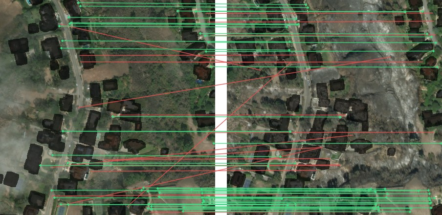

In deployment, the damage model needs building footprints that line up with the post-disaster image. With aligned footprints it reaches the known-footprint recall in the results; without them it depends on the detector. In xBD the pairs arrive aligned with their footprints. A real post-disaster image arrives with location metadata only, so aligning it to a pre-event reference is the first step and the main open problem.
Deployment pipeline
Input
Post-disaster image
Plus whatever metadata comes with it: GPS position, and possibly the camera pose (viewing angle, altitude).
→
Step 1 · bottleneck
Align to a pre-event reference
Find the matching pre-event image and its building footprints, and estimate the transform between the two images.
NOT BUILT YET→
Step 2
Transfer footprints
Warp the reference footprints onto the post-disaster image.
→
Step 3 · this project
Damage per building
Pre/post embeddings, scene context and their differences for each footprint → class.
If no reliable alignment: detect buildings on the image instead (lower recall, see results) and flag the area for review.
Approach to step 1, by available metadata
Case A
Camera pose known
GPS position, altitude, orientation and lens describe the camera completely.
Project rays from the image corners to the ground to get the image's ground footprint: a narrow search area and a first alignment.
Fetch the pre-event reference and building footprints for that area (or use an already matched reference).
Refine with keypoint matching on non-building structure and fit the transform with RANSAC.
Case B
Camera position only
Search radius = GPS error + visibility range (how far the camera can see from its altitude).
Collect candidate reference tiles inside the radius with their building footprints.
Rank candidates with an image embedder (global embeddings, nearest-neighbour search).
Align the best candidates with keypoints on non-building structure and RANSAC; accept only if enough keypoints agree.
In both cases, match only on structure that is not being assessed: roads, bridges, rivers, forest and field edges. Buildings are excluded: they are what the damage model assesses, and they are what the disaster changes. The reference footprints give the mask.
Keypoint matching on one test pair, buildings excluded

Alignment works without buildings
SIFT keypoints, ratio test and RANSAC on the wildfire scene, with every pre-event building footprint (plus an 8 px margin) masked out on both images (dark areas). Green: consistent with the fitted transform. Red: rejected.
| All keypoints | Buildings excluded |
|---|
Also next
Misalignment toleranceShift the footprints synthetically and measure how recall degrades; this sets the accuracy step 1 needs.
Unseen disastersAll results come from ten events seen in training. Hold out whole events.
Detection fallback78% of missed buildings already have a correct outline with a low score; re-scoring candidates is a tested pilot.
Minor damageMinor vs. no damage is the main confusion; pool features over the building mask instead of its box.
Matching: OpenCV SIFT (4,000 features max), Lowe ratio 0.75, RANSAC homography with a 3 px threshold, on an 880 px crop of xBD test scene socal-fire_00000937; building mask from the pre-event footprints. One pair, for illustration; not a registration benchmark.